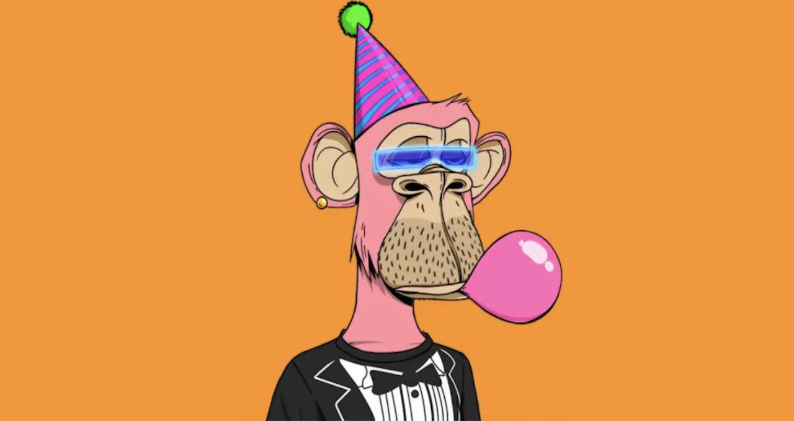
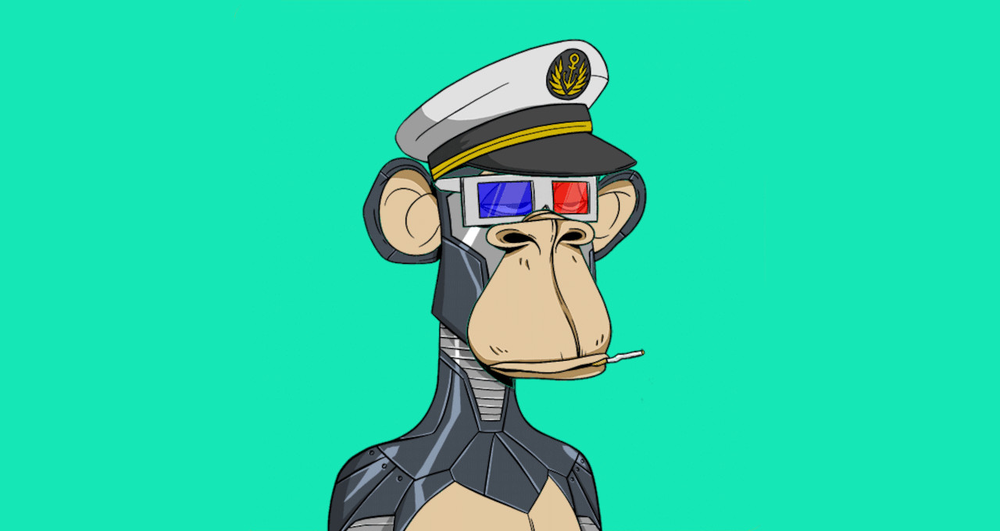
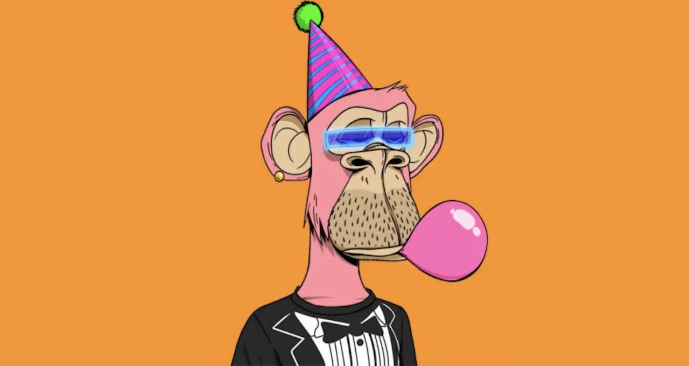
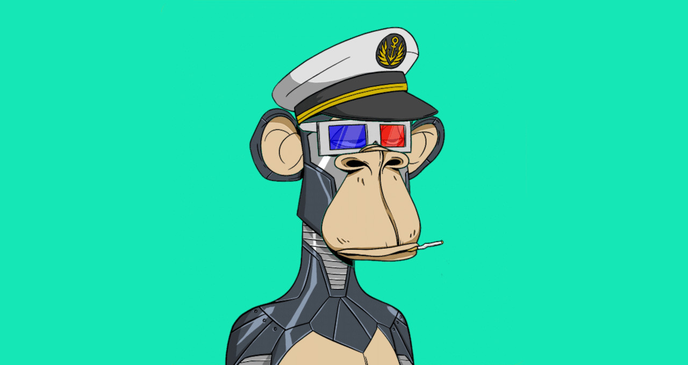

O que é um "NFT"?
NFT é a sigla em inglês para non-fungible token (token não fungível, na tradução para o português).
Na prática, um NFT é um certificado digital de propriedade que qualquer um pode ver e confirmar a autenticidade, mas ninguém pode alterar.
Para entender, imagine a situação abaixo.
Uma pessoa pode acessar a Internet e baixar a obra digital “Crossroad”, do artista norte-americano Mike Winkelmann (conhecido como Beeple), que foi transformada em NFT.
O item retrata o ex-presidente dos Estados Unidos, Donald Trump, nu e com palavrões rabiscados em seu corpo. Essa reprodução baixada, no entanto, é apenas uma cópia, sem valor comercial algum. A posse real da obra, vendida no início de 2021 por US$ 6,6 milhões, é apenas daquele indivíduo que tem o token não fungível dela, que funciona como um certificado digital de propriedade.